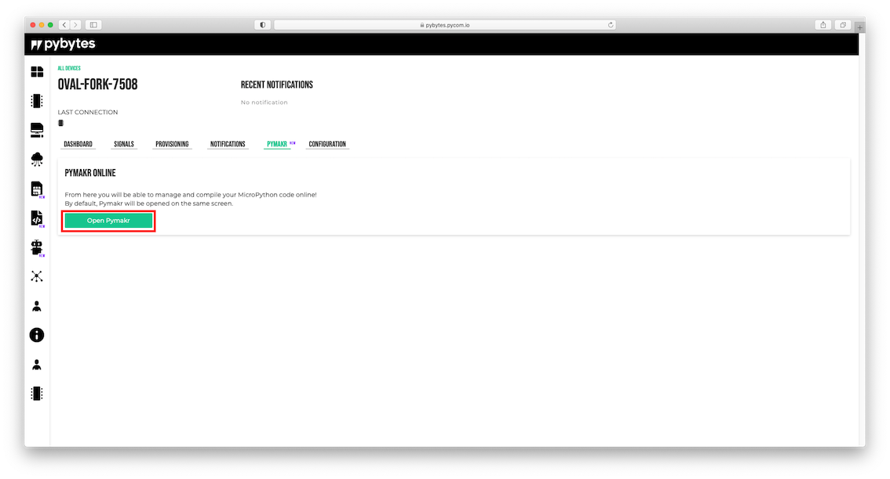
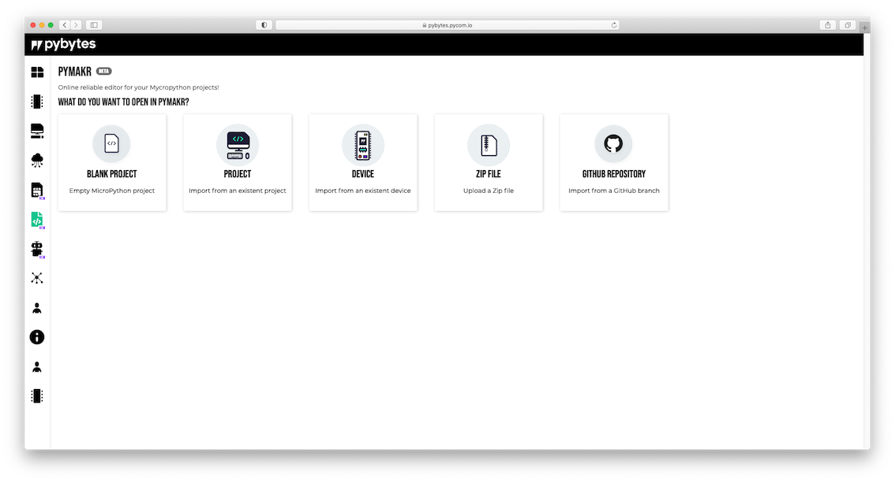
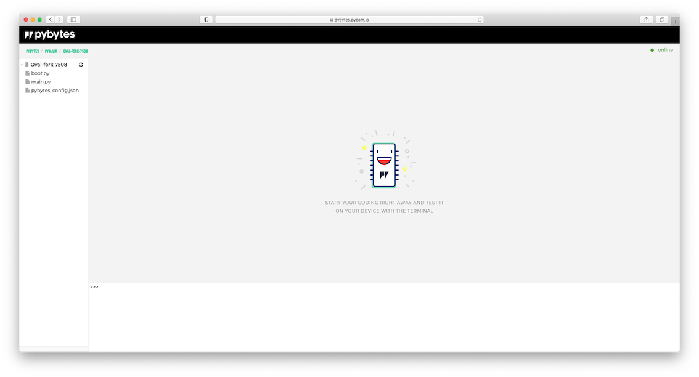
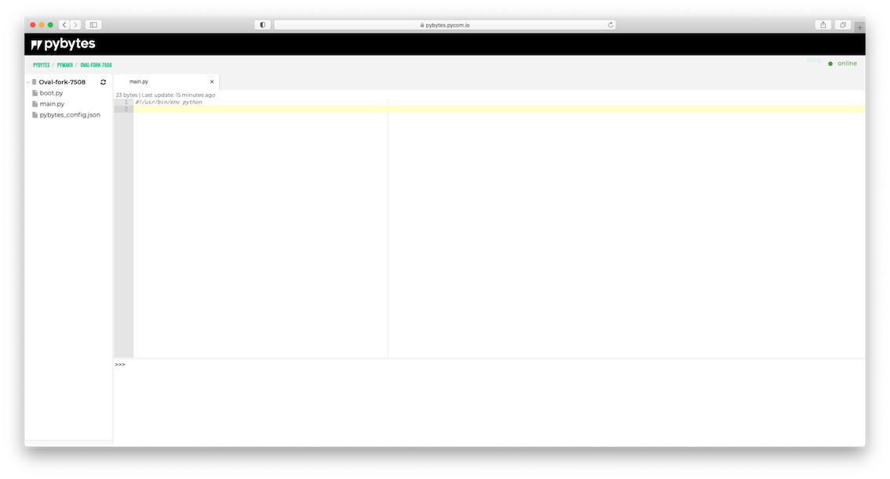
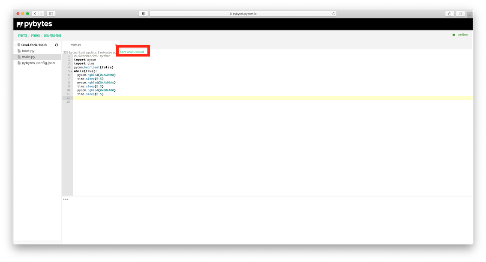
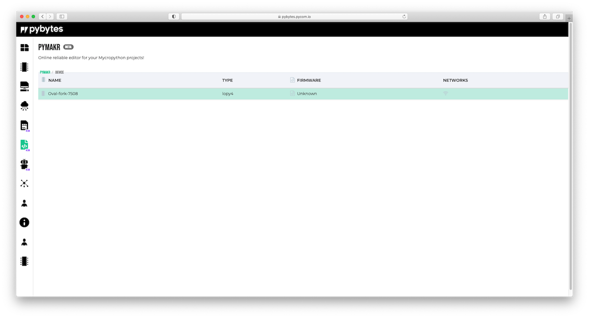
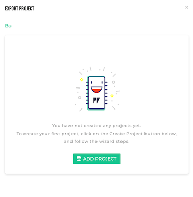
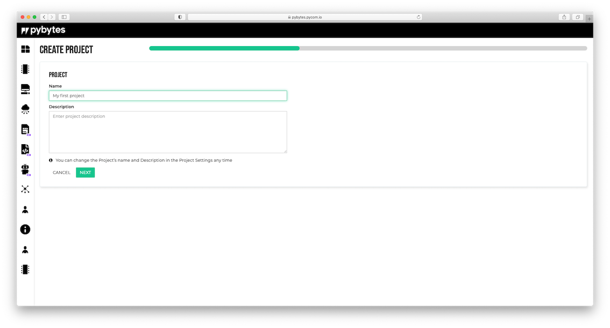

On this page, we discuss the functionality of Pymakr Online.
Pymakr Online is an online IDE for your MicroPython projects. We brought our Pymakr Plugin for Atom and Visual Studio code into Pybytes as an IDE, so you won’t necessarily need to have those code editors installed anymore in order to work with your Pycom devices.
There are two ways in which you can use Pymakr online.
Pymakr Online tab. This method allows you to make quick changes to the Python code on your device and upload it. This is the method we use below.


Refresh Hierarcy and synchronise the content. You can click the Refresh Hierarcy icon next to your device name to manually update the online filestructure. The online editor will automatically try to connect.Save/Export button here as well.main.py file, or, when not available, create one by right clicking on the device name to Create File. Here, we can write our own python code in the main editor. You can use the example we added below to try it out.
import pycom
import time
pycom.heartbeat(False)
while(True):
pycom.rgbled(0xAA0000)
time.sleep(0.5)
pycom.rgbled(0xAA00AA)
time.sleep(0.5)
pycom.rgbled(0x00AA00)
time.sleep(0.5)
Save and Upload button will appear (or you can use the Save/Export button already present), allowing you to upload code to the device. Clicking this will upload and reboot the device. The device will restart and go offline for a second. Then come back online and show the RGB LED blinking in three different colors.
Note that if you make a syntax error, the device will come back online but not throw any error in the REPL.
Import from Existing Device.
Select your device and either Retrieve from Cloud or Request from device, depending on where the latest version of your code is. This will load the hierarchy and bring up the Pymakr Online interface.
Make your changes and then click the Save/Export button, this offers three options. This time, we use Include in Release. It will ask us to create a new project, or add to an already existing project.

My first project and click next.
In the next screen, it asks for the WiFi network you want to use, select the one that is most convenient for you.
Now that we have successfully create a project. Using projects, you can add unlimited devices and keep them all up-to-date Over The Air (OTA) with new Pybytes configuration files, Python code or update the firmware.